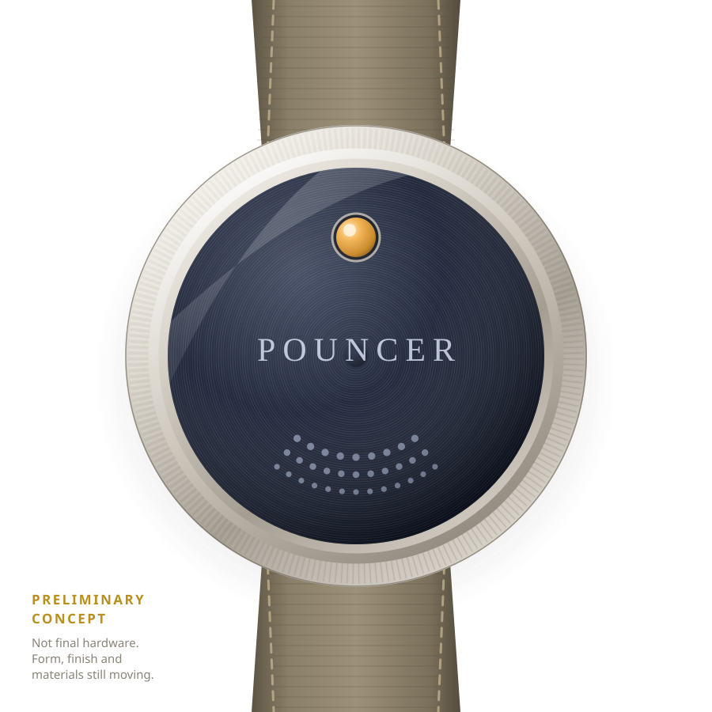
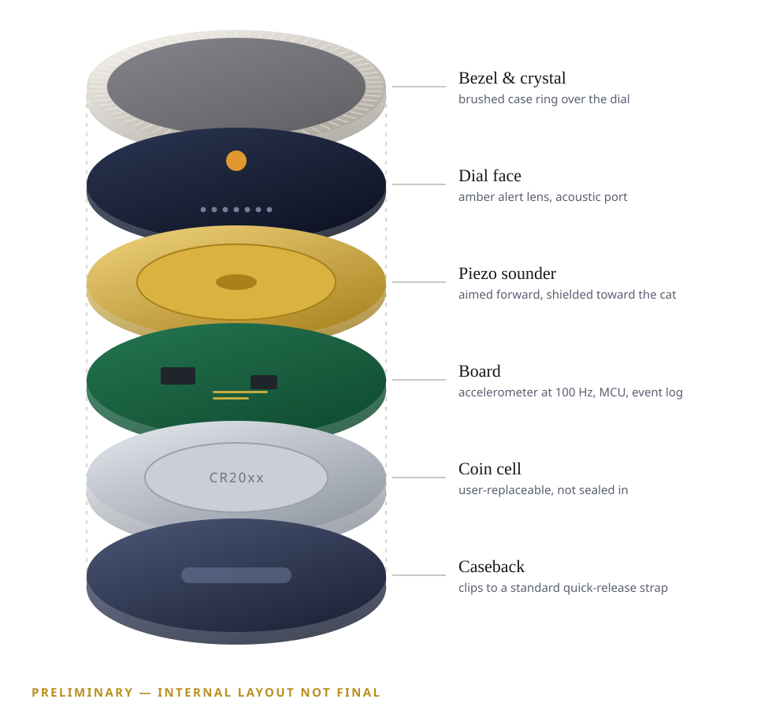

Mammals are most of it
Songbirds get the attention, but small mammals are the larger share. Voles, shrews and wood mice are native wildlife, not vermin — so Pouncer is built for the low, flat pounce as much as the strike upward at a bird.
For cat people who love wildlife too
Your cat is doing exactly what a cat does. Pouncer is built to read the launch as it begins and warn the bird, vole or shrew on the other end of it — then go quiet again for the rest of the day.
In active development, and honest about it. See what the evidence actually supports.
A survey of nearly a thousand cats, scaled to the national population, put the number of prey items brought home between April and August at around 92 million. Not a statistic about cats — a count of individual animals that lived in gardens like yours.
Woods, McDonald & Harris (2003), Mammal Review. The three groups shown account for 89 million of roughly 92 million items.
Songbirds get the attention, but small mammals are the larger share. Voles, shrews and wood mice are native wildlife, not vermin — so Pouncer is built for the low, flat pounce as much as the strike upward at a bird.
These counts only include what a cat carried back through the door. Prey eaten or left outside is never counted, so the real figure is higher — nobody knows by how much.
The RSPB's position is that there is no clear evidence this mortality is driving UK bird populations down. We are not arguing from collapse. We are arguing for the individual animals in one garden, and for owners who would rather they lived.
Your cat is not the problem. The tools are. Pouncer is built around the cat's instinct rather than against it — nothing to unlearn, nothing extra to carry.
A bell rings during ordinary movement, so there is nothing about it that says now. And it responds to gait, which a cat can quieten at no cost to the hunt. In the one controlled trial to measure it, bells made no discernible difference.
Bulky, snag-prone and easy to lose. They work by getting in the cat's way, which is precisely why they come home without them.
Built to stay silent until the launch itself. Inertial sensing is being developed to read the stalk-and-launch signature and fire one short cue — then go quiet again.
This is the design, not a demonstration. A three-axis accelerometer samples at 100 Hz, and the classifier is being built to look for a sequence rather than a single spike — which is what should keep play, jumping and a bumpy car ride silent.
Continuous low-power sampling on the collar. Ordinary movement stays below the confidence threshold and produces no output at all.
Sustained low-velocity stalking posture raises confidence. At this stage Pouncer can give a brief visual pulse only — no sound.
Launch acceleration on top of a confirmed stalk triggers one short, forward-directed chirp — the head start the whole design is aiming at.
Pouncer then stays acoustically quiet until motion settles and fresh evidence appears. Every candidate — alerted or suppressed — is logged for review.
Ten-second windows. Each event stores five seconds either side of the trigger on the device, then offloads over Bluetooth LE to the companion app so you can see what your cat actually did.
A single machined disc on the collar your cat already wears. It has no screen and nothing to read — the whole face is there to hold a lens, a sounder and a seal. Built to the tolerances of something worn every day, outdoors, by an animal who will not be careful with it.

Assembled — one disc on the collar
Scroll to take it apart
Those are measurements, and we do not have them. They get published when the hardware they describe exists — and not one release earlier.

Built to track micro-movements and recognise the acceleration signature of a launch as it begins, rather than report an impact after the fact.
No chiming while your cat eats, sleeps or walks. Hysteresis, dwell times and rate limits are specified specifically to keep nuisance alerts near zero — and the collar can be worn with alerts off entirely.
A serviceable module rather than a sealed one, on the collar you already own — so buying Pouncer does not mean throwing working equipment away.
Both images are preliminary concept renders produced for this page. They show intent, proportion and arrangement — not finished hardware. The case, the finish, the materials and the internal layout are all still moving, and the renders will be replaced by photographs of a real object the moment there is one worth photographing.
That is the object. The list is how you hear when it ships — and when the trial reports, whichever way it goes.
Join the listA controlled trial in 2021 measured how much different interventions changed the prey cats brought home. If you are buying a collar to protect wildlife, you deserve these numbers before you deserve our sales pitch.
| Intervention | Change in prey brought home |
|---|---|
| High-meat-content, grain-free food | −36% overall |
| 5–10 minutes of daily object play | −25% overall |
| Brightly coloured collar cover (visual) | −42% birds; no discernible effect on mammals |
| Cat bells | No discernible effect |
| Puzzle feeders | +33% — worse |
Bars run from −50% on the left to +50% on the right; the grey line is no change. Every figure is from the same trial, measured against controls and against the households' own pre-treatment period.
A bell is the closest thing ever tested to an acoustic collar alert, and it did nothing measurable. We used to explain that away by saying a bell warns too late. That was our argument, and it was wrong — badly enough that it is worth saying plainly here rather than quietly deleting.
A bell has no sensor and nothing to decide. The clapper moves the instant the cat does, so a bell gets more warning time than any device that has to detect a launch and confirm it first. On timing, a bell is the best case. Pouncer is necessarily worse, because it spends real milliseconds thinking.
So why the bell failed is genuinely unknown — the trial was not built to answer it. Our working hypothesis is about salience rather than timing: a bell rings during everything, from every direction, so there is no reason for a bird to treat it as a threat. Pouncer is silent until a launch, aimed forward, and fires rarely. Whether that is the difference is a hypothesis, not a finding.
What is not a hypothesis is the clock. A startled bird takes roughly 80 milliseconds just to begin reacting to a sound, and longer again to get clear — so the time we spend detecting and confirming comes straight out of the animal's. That is written into the engineering as a budget: hit it, or log the event and stay silent. The trial settles the rest, published either way. Meanwhile change the food and play with your cat — that beats every collar ever tested, ours included, today.
We would rather be trusted than hyped. Pouncer is a working engineering programme, not a finished product on a shelf, and these are the honest boundaries.
Inertial sampling, on-device event storage and Bluetooth LE offload to a companion application are the current development focus.
Classifier tuning against real recorded cat motion — birds and small mammals — and the directional acoustic enclosure: forward output, attenuated toward the cat.
Warning lead time. Measuring how long a real pounce lasts and how fast the collar can decide — because a cue that lands with the strike has warned nobody. If we cannot beat the clock, the device logs the event and makes no sound.
The prey-outcome trial. Alerts-on versus alerts-off on the same cat, results broken out by prey type, published either way.
Learning your individual cat. A collar calibrated to one cat's stalk can fire earlier than one built to fit every cat. Not in the first version — but the event log is being designed for it now.
Any reduction in prey caught. Final alert frequency and level. Battery life. Those numbers get published when measurement supports them — not before.
Pouncer is designed to give wildlife a warning, not to guarantee an outcome. It is a complement to diet, play and supervised outdoor time, not a substitute for them, and nothing here is veterinary advice.
We are heading for a crowdfunding launch. Leave an address for build updates, field-test results — including the ones that go against us — and early-backer access.
One list, low volume, unsubscribe any time. No payment is taken and nothing is binding — what joining the list does and does not mean, and what we do with your address. Follow along at @PouncerTag.
That is the central design constraint. The chirp is short, forward-directed and mechanically attenuated toward the cat's ears, and it fires rarely by design. Welfare testing gates the final acoustic profile — if a profile bothers cats, it does not ship.
Mostly it isn't. The mammals cats bring home in Britain are overwhelmingly native species — bank voles, field voles, shrews and wood mice — rather than the commensal brown rats and house mice people picture as pests. Shrews in particular are protected under UK law and are frequently caught and left uneaten. Pouncer also cannot tell one small mammal from another: it is built to detect the pounce, not the prey.
Honestly: it might not be. Nobody knows why bells fail, including us — the trial that measured it was not designed to find out, and a bell is not slow, it is simply always ringing. What we are betting on is that a cue which fires rarely, points forward and responds to the launch itself — which a cat cannot suppress without abandoning the pounce — is treated differently from a jingle that accompanies everything. That is a bet. Our trial is what settles it, and we will publish it either way.
That is the plan, and it is not in the first version. Every cat stalks a little differently, and a collar calibrated to yours can recognise a launch earlier than one that has to work for every cat — which buys back exactly the milliseconds that matter. The event log is being designed to support it from the start. Until it ships, we will not claim the device adapts.
A single hard acceleration is never enough. The classifier requires a stalk phase, then launch features, then a confirmation window — followed by a cooldown that needs fresh evidence before it can sound again.
That is the most effective option, and for some cats and some locations it is the right one. It is also not a choice every owner can or will make, and a cat with outdoor access and no intervention is the status quo Pouncer is trying to improve on. We would rather help the owner who is staying outdoors than lecture them.
No — and those have better evidence behind them than anything we have proven yet. A high-meat-content food and ten minutes of daily play both reduced prey brought home in a controlled trial. Do those first. Pouncer is designed to work alongside them.
No. Pouncer records motion events, not position, and there is no GPS in the module. Events stay on the collar until you download them over Bluetooth LE.
The first companion app targets one platform — Windows or Android — so it can ship properly rather than half-working everywhere. The choice is announced with the crowdfunding launch.
It is designed as a compact module for standard quick-release collars, so the break-away safety mechanism you already use stays in place.